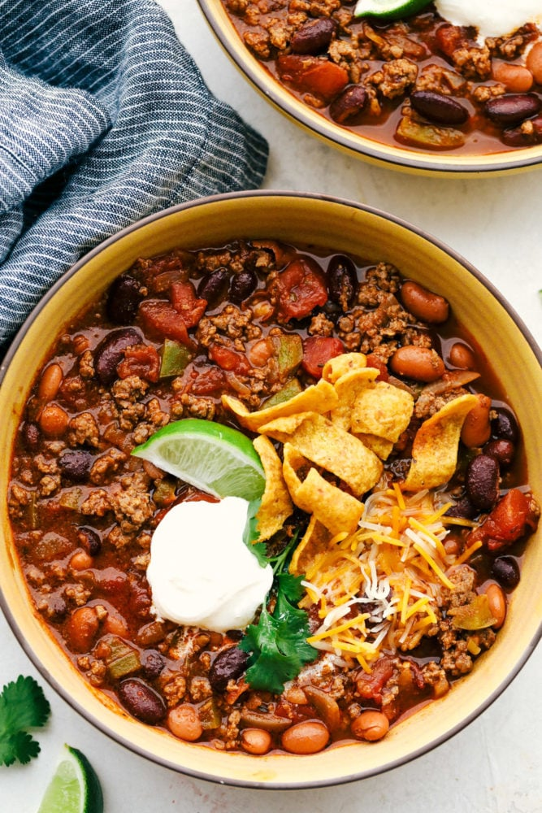

Grandma's Chili

Description
Cozy up with this perfect fall and winter recipe. Flavorful and delicious, this is a game-changer at any event or party
Ingredients
- 1 T olive oil
- 1 small onion
- 1 green bell pepper
- 2 garlic cloves
- 2 lbs of ground beef
- 2 c beef broth
- 1 8oz can of tomato sauce
- 1 15oz can of diced tomatos, pinto beans and kidney beans each
- 3 T chili powder
- 1 T oregano
- 1 t cumin
- 1 t coriander
- 1 t salt
- 1/4 t cayenne
Instructions
- In a large pot, add the olive oil over medium high heat. Add the onion, bell pepper and garlic. Saute until almost tender.
- Add in the ground beef and cook until brown
- Add the beef broth, tomato sauce, tomatoes, pinto beans, kidney beans, chili powder, oregano, cumin, coriander, salt and cayenne
- Bring to a boil and reduce to a simmer until it starts to thicken (about 30 minutes)